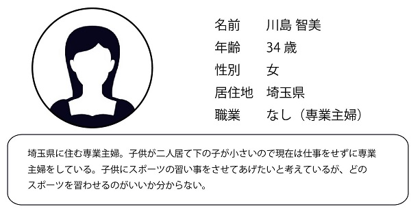

作品概要

保護者をターゲットにしたポスター
子供に習い事をさせてあげたいと考えているが、どうすればよいかわからない。 たくさんのスポーツチームがある中でどのチームを選べばいいのかわからない。などの不安を抱える保護者の方に対し 実際のクラブ員の写真を使用し、チームの明るく楽しい雰囲気を感じ取ってもらえるようなデザイン
子供たちをターゲットにしたポスター
サッカーってかっこいい！サッカーを習ってみたい！と考えている子供たちに対し普段目にしないような かっこよくもゲームのような面白さのある子供たちを目を引くアイソメトリックデザイン。
制作工程
ポスター制作依頼・アンケート
ポスターデザインの依頼
自身の所属しているサッカーチームでサッカー体験会ポスター制作の依頼を受けた。 過去のポスターに対する意見を伺うと、見る人によってポスターに求めるものが異なるということが分かった。
解決策
ペルソナに適切ポスターを複数制作
サッカーチームの所属を検討している子供と、その保護者をペルソナに設定し、それぞれに適切なポスターの制作を行った。
ペルソナ
保護者は安心感を求める
アンケートの結果等から保護者の方はチームの雰囲気など、自分の子供を任せるに値するかという情報を欲しており、クラブに所属させてあげたいがどうすれば良いのかわからないという不安を抱える保護者をペルソナに設定した。
ペルソナへのアピール法
子供の写真を使う
チームの雰囲気を伝えるためには実際のクラブ員の写真を使用したデザインが最適だと考えた。保護者に安心感を与えるため、楽しく明るいというチームの雰囲気に最も適した画像を利用しデザインを行った。
写真選び
写真コンテストの企画・提案
良い写真を効率よく集めるためにはどうすればよいか考えた結果、保護者による写真コンテストが最適だと考え、コーチ会議で企画の提案を行った。 企画が採用され、保護者の方々に30枚近くの写真を投稿していただき、他のコーチからの評価が高い写真をポスターとして使用することにした。
ラフスケッチ
写真を使用した最適なレイアウトを探す
ラフスケッチを何度も行い、元気の良さと楽しいチームの明るい雰囲気を表現するレイアウトを探した。
中央を丸で切り抜き、そこから写真をはみ出すことで元気の良さを表現するとともに、白い背景にすることで重なる赤いチームカラーを目立たせた。
フォント
5種類のフォントを使用
しつこいとも感じられるような子供たちの元気のよさをフォントでも表現できないかと考えた。合計5種類ものフォントを使用することで元気の良さ、チームの明るい雰囲気を表現した。
とにかく明るく
色も関しても黄色・オレンジ・赤・水色など、目にいたいほどの明るさで子供の元気の良さを徹底的に表現した。
ペルソナ
サッカーに興味がある小学生
サッカーに興味があり、かっこいいと思っている小学生をターゲットに設定した。
ペルソナへのアピール法
アイソメトリックデザイン
ITサービスの紹介画面やポスターなどではトレンドとして多く用いられている。 しかし、田舎のサッカーチームのポスターに用いられることはない。 ITサービスのデザインを知っている自分だからこそ提案できる新しくかっこいいデザインではないかと予想し、アイソメトリックデザインのポスターを考えた。
アイソメトリックデザイン
本当に子供たちの目を引けるのか
実際にクラブ員の子供たちに様々な企業やスポーツクラブなどのポスターやイラストなどを見てもらい、意見を聞くとアイソメトリックデザインのポスターが圧倒的に人気だった。 「かっこいい」または「ゲームみたいで面白い」という意見があり、今回のポスターデザインはかっこよさだけではなくゲーム画面もイメージして制作した。
ラフスケッチ
情報とイラストを分ける
今回制作するポスターでは、アイソメトリックを活かしたデザインになるように試行錯誤した。
最終的には保護者がいつどこで開催されるのかなどの情報を見るので、イラストと情報がかぶらないようなレイアウトに調整した。
フォント
やさしさのあるフォント
力強く関わりにくい雰囲気の赤と黒を使ったのでフォントはゴシック体のような角のあるフォントではなく、 優しい雰囲気のある丸みをおびたフォントが最適だと考え、教科書体を使用した。
チームカラーの赤をつかう
チームカラーの赤をメインに使用した。 スポーツチームのポスターが掲載される公民館、スポーツショップ、居酒屋のトイレなどは、ほとんどの場合他のチームのポスターもあるので真っ赤なポスターは目に留まると判断した。
ポスターの効果
効果
ポスターを見て約20人が参加。担当学年は3人が入部
自分の制作したポスターを見て約20の子供たちが体験会に参加し、自分の担当学年の三年生はこの体験会がきっかけで3人が入部を決定した。
自分のデザインがきっかけで他人の人生を左右するということを体感し、デザインの重要性を強く感じた。
| トップに戻る | 次の作品を見る |